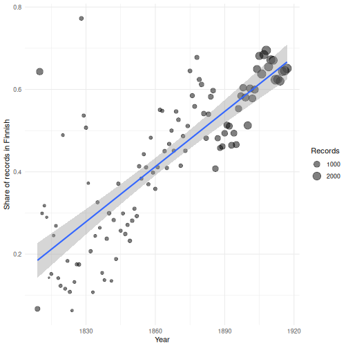
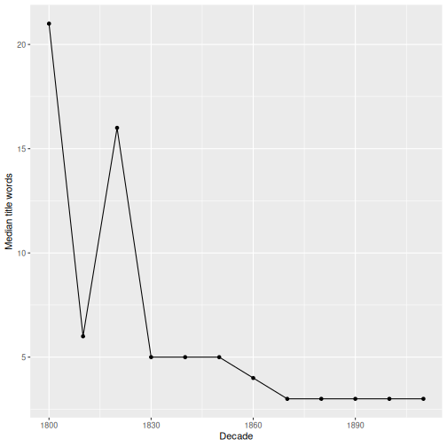

Basic Statistical Analysis
Last updated on 2026-11-06 | Edit this page
Estimated time: 50 minutes
Overview
Questions
- How do I describe a numeric variable with summary statistics?
- How do I measure whether two variables are related?
- How do I test whether groups differ, and how should I interpret the result?
Objectives
- Calculate and interpret the mean, median, standard deviation and quantiles.
- Measure association with a correlation coefficient.
- Compare two groups with a t-test and a Wilcoxon test.
- Test the association between two categorical variables with a chi-squared test.
- Fit and interpret a simple linear regression.
- Explain why effect size matters more than p-values in large datasets.
Getting started
Load the packages and the clean data as in the previous episodes:
R
library(arrow)
library(dplyr)
library(ggplot2)
fennica_clean <- read_ipc_file("data/fennica_clean.feather")
Our running question in this episode: did titles get shorter
during the 19th century? Early modern books often had very
long, descriptive titles. We will use the number of words in the title,
title_words, to find out.
Describing a variable
The mean is the average; the median is the middle value when all values are sorted:
R
mean(fennica_clean$title_words)
OUTPUT
[1] 6.178159R
median(fennica_clean$title_words)
OUTPUT
[1] 3The mean is much larger than the median. As we saw in the histogram in the previous episode, the distribution is skewed: a few very long titles pull the mean upwards. For skewed data the median is often a better description of a “typical” value.
The standard deviation describes how spread out values are around the mean, and quantiles split sorted values into portions:
R
sd(fennica_clean$title_words)
OUTPUT
[1] 9.643476R
quantile(fennica_clean$title_words, probs = c(0.1, 0.25, 0.5, 0.75, 0.9))
OUTPUT
10% 25% 50% 75% 90%
1 2 3 6 12 Half of the titles have between 2 and 6 words (the interquartile range), while 10% have more than 12 words.
Challenge 1: Describe by period
Compare the median, mean and 90th percentile of
title_words for records published before
1850 and from 1900 onwards.
R
fennica_clean |>
filter(year < 1850 | year >= 1900) |>
mutate(period = if_else(year < 1850, "before 1850", "1900 onwards")) |>
group_by(period) |>
summarise(
median = median(title_words),
mean = mean(title_words),
p90 = quantile(title_words, 0.9)
)
OUTPUT
# A tibble: 2 × 4
period median mean p90
<chr> <dbl> <dbl> <dbl>
1 1900 onwards 3 4.39 9
2 before 1850 6 17.2 51Titles were clearly longer in the early period.
Correlation
A correlation coefficient measures how strongly two numeric variables are related, on a scale from −1 (perfect negative relationship) through 0 (no linear relationship) to +1 (perfect positive relationship).
R
cor(fennica_clean$year, fennica_clean$title_words, use = "complete.obs")
OUTPUT
[1] -0.4095985use = "complete.obs" skips records where either value is
missing. The negative value means that later records tend to have
shorter titles.
The standard (Pearson) correlation is sensitive to extreme values. The Spearman correlation uses ranks instead of values and is more robust for skewed data:
R
cor(fennica_clean$year, fennica_clean$title_words,
use = "complete.obs", method = "spearman")
OUTPUT
[1] -0.1937598Correlation is not causation
A correlation only says that two variables vary together. Titles did not get shorter because time passed: changes in printing, genres, readership and cataloguing practice are possible explanations that we would have to investigate.
Comparing two groups
Are Swedish titles longer than Finnish ones?
R
fi_sv <- fennica_clean |>
filter(language %in% c("Finnish", "Swedish"))
fi_sv |>
group_by(language) |>
summarise(n = n(),
mean_words = mean(title_words),
median_words = median(title_words))
OUTPUT
# A tibble: 2 × 4
language n mean_words median_words
<chr> <int> <dbl> <dbl>
1 Finnish 40378 3.90 3
2 Swedish 23338 7.00 4Swedish titles are longer on average. But could a difference like this arise just by chance? A statistical test helps us judge this.
The t-test compares the means of two groups:
R
t.test(title_words ~ language, data = fi_sv)
OUTPUT
Welch Two Sample t-test
data: title_words by language
t = -54.597, df = 30717, p-value < 2.2e-16
alternative hypothesis: true difference in means between group Finnish and group Swedish is not equal to 0
95 percent confidence interval:
-3.215516 -2.992640
sample estimates:
mean in group Finnish mean in group Swedish
3.896008 7.000086 The formula title_words ~ language reads “title words
by language”. The output gives the two group means, a
confidence interval for their difference and a p-value.
The p-value is the probability of seeing a difference at least this
large if there were really no difference between the groups. A
small p-value (conventionally below 0.05) suggests the difference is
unlikely to be due to chance alone.
Because title_words is very skewed, a Wilcoxon
rank-sum test, which compares ranks instead of means, is a
safer choice:
R
wilcox.test(title_words ~ language, data = fi_sv)
OUTPUT
Wilcoxon rank sum test with continuity correction
data: title_words by language
W = 333355182, p-value < 2.2e-16
alternative hypothesis: true location shift is not equal to 0Big data, tiny p-values
With tens of thousands of records, even tiny and unimportant differences give p-values close to zero. Always look at the effect size, i.e. how large the difference is in real terms (here: about three words on average, one word in the median), and ask whether it is meaningful for your research question.
Also remember that Fennica is not a random sample: it aims to cover all publications. Statistical tests then tell us whether a pattern is strong compared to random variation, not whether it holds in some larger “population”.
Two categorical variables: the chi-squared test
Did Finnish and Swedish publishing differ in what kind of books were published? Let’s compare the share of fiction and non-fiction:
R
fiction_table <- fi_sv |>
filter(!is.na(genre), genre != "Other") |>
mutate(fiction = if_else(genre == "Non-fiction", "Non-fiction", "Fiction")) |>
select(language, fiction) |>
table()
fiction_table
OUTPUT
fiction
language Fiction Non-fiction
Finnish 10235 21934
Swedish 3767 14242R
prop.table(fiction_table, margin = 1)
OUTPUT
fiction
language Fiction Non-fiction
Finnish 0.3181634 0.6818366
Swedish 0.2091732 0.7908268prop.table(..., margin = 1) gives proportions within
each row (language). The chi-squared test asks whether
the two variables are independent:
R
chisq.test(fiction_table)
OUTPUT
Pearson's Chi-squared test with Yates' continuity correction
data: fiction_table
X-squared = 681.18, df = 1, p-value < 2.2e-16The very small p-value means the share of fiction is clearly different between the languages. As always, look at the proportions above to see how they differ.
Simple linear regression
Linear regression describes how one variable changes with another by fitting a straight line. Let’s model how the share of Finnish-language publications changed per year:
R
finnish_share <- fennica_clean |>
filter(!is.na(year)) |>
group_by(year) |>
summarise(share_finnish = mean(language == "Finnish"), n = n())
model <- lm(share_finnish ~ year, data = finnish_share)
summary(model)
OUTPUT
Call:
lm(formula = share_finnish ~ year, data = finnish_share)
Residuals:
Min 1Q Median 3Q Max
-0.19252 -0.07828 -0.01579 0.04805 0.50276
Coefficients:
Estimate Std. Error t value Pr(>|t|)
(Intercept) -7.8838925 0.6356276 -12.40 <2e-16 ***
year 0.0044604 0.0003411 13.07 <2e-16 ***
---
Signif. codes: 0 '***' 0.001 '**' 0.01 '*' 0.05 '.' 0.1 ' ' 1
Residual standard error: 0.1121 on 107 degrees of freedom
Multiple R-squared: 0.615, Adjusted R-squared: 0.6115
F-statistic: 171 on 1 and 107 DF, p-value: < 2.2e-16The most important numbers are the coefficients:
- The
yearestimate is the slope: on average, the share of Finnish grew by about 0.45 percentage points per year. -
R-squaredtells how much of the variation in the share is explained by the line, from 0 (none) to 1 (all).
We can draw the fitted line with
geom_smooth(method = "lm"):
R
ggplot(finnish_share, aes(x = year, y = share_finnish)) +
geom_point(aes(size = n), alpha = 0.5) +
geom_smooth(method = "lm") +
labs(x = "Year", y = "Share of records in Finnish",
size = "Records") +
theme_minimal()

Check your model
Always plot your data together with the model. A straight line is a strong simplification: here, the share grows slowly at first and faster later, and years with few records (small points) vary a lot. A model is a summary, not the truth.
Challenge 2: Titles over time
- Calculate the median number of title words per decade and plot it as a line chart.
- Fit a linear regression of
title_wordsonyearusing all records. What is the slope, and how would you interpret it? - Look at the
R-squared. What does it tell you?
R
fennica_clean |>
group_by(decade) |>
summarise(median_words = median(title_words)) |>
ggplot(aes(x = decade, y = median_words)) +
geom_line() +
geom_point() +
labs(x = "Decade", y = "Median title words")
WARNING
Warning: Removed 1 row containing missing values or values outside the scale range
(`geom_line()`).WARNING
Warning: Removed 1 row containing missing values or values outside the scale range
(`geom_point()`).
R
title_model <- lm(title_words ~ year, data = fennica_clean)
coef(title_model)
OUTPUT
(Intercept) year
276.8804960 -0.1431709 R
summary(title_model)$r.squared
OUTPUT
[1] 0.167771Titles get shorter by about 0.14 words per year on average, i.e. roughly 1.4 words per decade. The R-squared is low: year explains only a modest part of the variation in title length. Most of the differences between titles are due to other factors, such as genre and language.
Where to go next
You now have the tools for a complete analysis workflow: loading, cleaning, summarising, visualising and testing. Some ideas for further exploration of Fennica:
- How did the publishing profiles of Helsinki, Turku and Viipuri differ?
- Which authors published in both Finnish and Swedish?
- How did the share of translations or of religious literature change?
- Combine Fennica with other data, such as population figures, to calculate publications per inhabitant.
- Use the median and quantiles to describe skewed variables; the mean is sensitive to extreme values.
-
cor()measures association; Spearman correlation is more robust for skewed data. -
t.test()andwilcox.test()compare two groups;chisq.test()tests two categorical variables. -
lm()fits a linear regression; the slope tells how much y changes per unit of x. - With large datasets, focus on effect sizes and plots, not only on p-values.
- Correlation is not causation, and every model is a simplification.